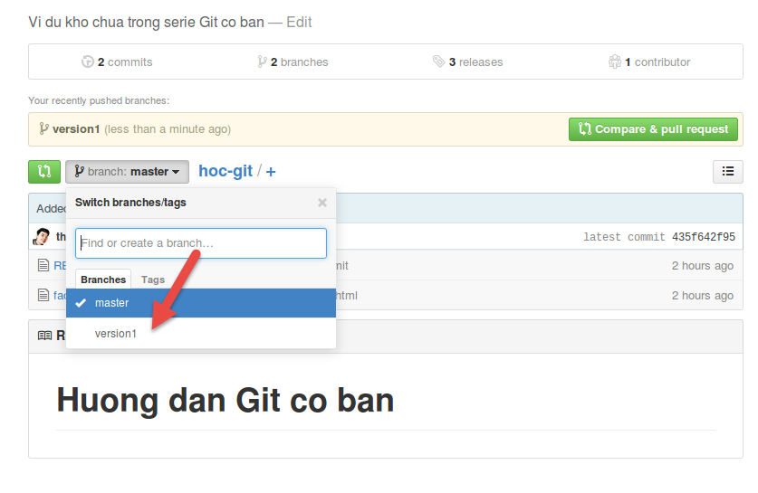

Đánh tag với git
Trong khi bạn commit các lần chỉnh sửa của mình thì mọi thứ sẽ được đều
lưu vào log mà mình đã hướng dẫn bạn cách xem commit log ở
phần
trước. Tuy nhiên nếu bạn commit quá nhiều thì sẽ gây khó khăn cho
bạn về sau nếu cần xem lại thông tin của lần commit trước mà bạn có thể
gắn thẻ đánh dấu (tag) cho mỗi commit và khi cần xem bạn chỉ cần sử dụng
lệnh git show tên_tag là đã có thông tin rất rõ ràng,
ngoài ra nó còn giúp bạn dễ dàng diff (đối chiếu) sau này khi không cần
nhớ checksum (dù chỉ cần nhớ vài ký tự đầu tiên) của mỗi commit mà
chỉ cần nhớ tag, cũng như có thể tạo thêm branch từ tag để bạn thuận
tiện hơn trong việc phân nhánh.
Xem danh sách tag
Để xem danh sách tag, bạn dùng lệnh:
git tag -n
Để xem danh sách commit mà có thông tin tag, sử dụng lệnh:
git log --pretty="%H %d" --decorate=short
Lightweight tag và annotated tag
Trong Git có hai kiểu tag chính đó là:
- Lightweight tag: Các tag này chỉ đơn thuần là đánh dấu snapshot của commit.
- Annotated tag: Với tag này, bạn có thể đặt tiêu đề cho tag, và khi xem nó sẽ có thông tin về người tag, ngày tag,….
Cách tạo lightweight tag
Trước tiên, bạn có thể gõ git tag để xem danh sách
các tag có trong dự án của bạn. Sau đó để tạo thêm một tag, bạn có thể
gõ git tag tên_tag để tạo. Ví dụ như v1.0 chẳng
hạn.
$ git tag v1.0 $ git tag v1.0
Bây giờ bạn có thể xem thông tin của lần commit được gắn tag này bằng
lệnh git show tên_tag. Lưu ý rằng lệnh trên nó sẽ đánh dấu
lần commit cuối cùng của bạn vào tag v1.0.
$ git show v1.0 commit 05193375f7a7c1295fd26c6388d81e188f405b0b Author: Thach Pham <contact@thachpham.com> Date: Thu Apr 23 02:20:50 2015 -0700 Added a new tag diff --git a/tag.html b/tag.html new file mode 100644 index 0000000..e69de29
Cách tạo annotated tag
Để tạo annotated tag thì bạn cũng sử dụng lệnh git tag
nhưng sẽ có thêm tham số -a và tham số -m để
thiết lập lời nhắn cho tag này.
$ git tag -a v1.0-an -m "Ra mat phien ban 1.0" $ git show v1.0-an tag v1.0-an Tagger: Thach Pham <contact@thachpham.com> Date: Thu Apr 23 02:41:11 2015 -0700 Ra mat phien ban 1.0 commit d5a599e3385a8fc7a65958ed50bc8b54666b45ad Author: Thach Pham <contact@thachpham.com> Date: Thu Apr 23 02:40:31 2015 -0700 Commit for Annotated Tag diff --git a/tag.html b/tag.html index e69de29..fea03c1 100644 --- a/tag.html +++ b/tag.html @@ -0,0 +1 @@ +Annotated Tag
Bạn có thể thấy khi show ra, cái annotated tag sẽ có nhiều thông tin hơn là so với cái tag thông thường, và đây cũng là kiểu tag bạn nên sử dụng để có nhiều thông tin hơn.
Thêm tag cho các commit cũ
Ở lệnh trên thì bạn chỉ tạo ra tag cho commit cuối cùng của bạn. Còn nếu bạn có rất nhiều commit trước đó mà cần gắn tag thì chỉ cần thêm mã checksum (hoặc một đoạn mã checksum) của lần commit đó.
Để xem mã checksum của các lần commit trước đó thì bạn có thể sử dụng git
log với tham số --pretty với giá trị oneline để
lọc log nhé.
$ git log --pretty=oneline d5a599e3385a8fc7a65958ed50bc8b54666b45ad Commit for Annotated Tag 05193375f7a7c1295fd26c6388d81e188f405b0b Added a new tag 435f642f951fbab1037fc2feef239ab26d6e6115 Added faq.html 6904d5232bf90821068279311e205e3e1ff929f1 Initial commit
Và bây giờ mình có thể đặt tag cho commit Initial commit thì
sẽ khai báo một đoạn mã checksum của nó vào lệnh git tag như
sau.
$ git tag -a v0.0 6904d -m "Tag for inintial commit" $ git tag v0.0 v1.0 v1.0-an
Push tag
Mặc định lệnh git push sẽ không push các tag đã tạo
lên repository mà bạn có thể dùng lệnh git push --tags để
đẩy toàn bộ tag lên repository.
$ git push --tags Username for 'https://github.com': thachphamblog Password for 'https://thachphamblog@github.com': Counting objects: 7, done. Delta compression using up to 4 threads. Compressing objects: 100% (6/6), done. Writing objects: 100% (7/7), 775 bytes | 0 bytes/s, done. Total 7 (delta 1), reused 0 (delta 0) To https://github.com/thachphamblog/hoc-git.git * [new tag] v0.0 -> v0.0 * [new tag] v1.0 -> v1.0 * [new tag] v1.0-an -> v1.0-an
Nếu bạn dùng GitHub hay các dịch vụ tương tự thì bây giờ bạn sẽ thấy tag xuất hiện ở repository.

Nhập tag vào branch
Mặc dù ở bài sau mình sẽ giải thích qua branch nhưng tạm thời bây giờ bạn có thể hiểu branch là một phân nhánh trong một cây dự án để bạn sửa mã nguồn mà không ảnh hưởng đến phân nhánh gốc (master).
Bây giờ bạn có thể truy cập vào dữ liệu mà bạn đã commit thông qua
tag kèm theo việc tạo một branch mới với lệnh git checkout -b
tên_branch tên_tag. Ví dụ mình muốn đưa cái tag v1.0-an
vào một branch mới tên version1 thì sẽ viết như sau:
$ git checkout -b version1 v1.0-an Switched to a new branch 'version1'
Lúc này bạn đã tự động chuyển qua branch version1 thay
vì master ban đầu, kèm theo đó là dữ liệu của lần
commit được gắn tag v1.0-an.
Bây giờ nếu bạn muốn làm việc thêm với branch này thì cứ làm việc
như khi bạn ở master. Để chuyển về lại master, bạn gõ lệnh
git checkout master.
Để push cái branch này lên bạn có thể sử dụng lệnh git push
origin version1. Nếu bạn quên thì mình nhắc lại nhé, origin chính
là tên địa chỉ remote của repository mặc định mà git tự đặt khi bạn
clone.

Bây giờ bạn thử vào xem cái version1 và cái master
xem có thấy sự khác nhau của nó không? Ở bài nói về branch mình sẽ giải
thích cho bạn kỹ hơn. Đại loại là bạn tạo một phân nhánh khác để sửa
code riêng mà không ảnh hưởng đến code chính.
Lời kết
Trong bài này chắc bạn đã thấy được sức mạnh của Git là như thế nào và khi nó kết hợp với branch thì sẽ rất tuyệt vời trong việc phân chia nhánh cho mã nguồn để bạn làm việc linh hoạt hơn, dễ dàng chuyển đổi qua các phiên bản mà không cần làm gì nhiều. Bạn đừng lo lắng khi chưa hiểu rõ về branch, mình sẽ giải thích ngay ở phần sau đây.